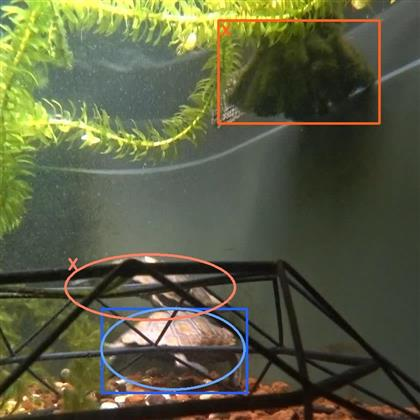

- 検出に用いた880画像は、9月6日に一つのカメラ位置から撮影したものだが、撮影中の日照条件の変化が大きく、変化に富み様々な映り方をしているフレーム画像が含まれている。
- 最適化に用いる元データは以下の2種。
454画像 8月14日～9月5日に撮影した画像（撮影回数11回）。バリエーションに富んだ画像になるよう撮影の度にカメラ位置と撮影方向を変えた。できるだけ多様な映り方になっているフレーム画像を目視でピックアップした。 738画像 454画像に対して、9月7日～9月17日に撮影した画像（撮影回数5回）を追加した。撮影方法やフレーム画像のピックアップ方法は454画像と同様。 - 自動最適化ツールに4種の最適化レベル（Low,Medium,High,Extra）を用意している。最適化しない場合を含め、以下の5種の学習データを用意する。
無し 最適化無し。ヒトが目視でピックアップした画像をそのまま学習データとする（画像にアノテーションを行い、8：2の割合で訓練データと検証データに分ける）。 Low 弱い最適化で選別した学習データを用いる。画像数は元画像に比較的近い数となる。 Medium 並みの最適化で選別した学習データを用いる。画像数は元画像の半分に近い数となる（元データの性質で増減する）。 High 強い最適化で選別した学習データを用いる。画像数は元画像の半分以下になる（元データの性質で増減する）。 Extra 最強の最適化で選別した学習データを用いる。画像数は最も少なくなる。 
- 学習に用いるYOLOv8のモデルサイズはN,S,Mの三種。

- 検出用880画像に対して、学習モデルで推論し検出ラベルを出力、ヒトがアノテーションした目視ラベルと検出ラベルを照合し、検出数および誤検出数を出力する。

- 推論時のconf閾値は比較のため一律0.5とする。
- 検出数は画像に映り込んでいるカメを正しく検出した回数、誤検出数は画像中のカメではないモノをカメとして検出した回数。
- 検出数が多く誤検出数が少ない方が良いが、誤検出は今回のデータ最適化ではない他の方法で対処するためここでは重要視しない。
AI学習データ自動最適化による検出性能向上
概要
- AIで物体検出する場合にもっとも重要なのは用意する学習データの質と量であるが、具体的にどのような学習データを用意すれば良いかは経験と勘と試行錯誤によることが多い。
- 検出性能を向上させるために単純に学習データを増やしていけば良いというわけではない。 学習データを増やしても一向に検出性能が向上しない、また特定シチュエーションでの検出性能のみが向上する、という状況に陥ることも多い。
- この課題に対して、AIの特性を踏まえた理論的に正攻法のアプローチ手法もあるが、計算コストが増大するため現実的な解決策にならない場合が多い。
- 検出性能を向上させるためには、学習データとして多種多様で（バリエーションが多く）偏りの少ない画像を選ぶ必要があるが、画像が数百枚を超えると適切に判断することが難しくなる。 特に画像を減らす判断が極めて難しいこともあり、新たな画像を適当に選んで学習データに追加して評価する、という単純作業を繰り返すことしかできなくなる。 そのうち画像が増えて収拾がつかなくなるとともに、画像数に比例してAIの学習時間も増大するため精神的にも疲弊して「この辺が現状AIモデルの限界だろう」と都合よく解釈して諦める、ということになったりもする。
- ここで必要になるのは、AIの高度な知識や手法ではなく、試行錯誤的に単純作業を繰り返す忍耐力である。これこそ真っ先に機械による自動化を検討すべき作業のようにも思える。
- そこで、用意した学習データから検出に最適な学習データのみを自動的に選別する「学習データ自動最適化ツール」を開発し、検出性能を確認した。
- 画像を適当に取捨選別しつつ学習データに追加して評価する作業を繰り返すことで、最適な学習データに近づけていくが、 状況に応じたデータの割り振りやAIモデル使用した評価などの細かい処理は、これまでの経験と勘に基づいて行ってきた作業を再現するように実装（プログラミング）した。 目的に対して理想的な処理方式とは言えないかもしれないが、実用レベルの近似解に効率的に到達する方式になっていると考えている。
- 機械（計算機）なので精神的に疲れて諦めることもなく、最適な学習データに近づける作業を最後まで頑張るため、 ヒトよりも高品質の学習データを獲得できる可能性がある。ただし、AIモデルによる学習と推論を繰り返すため機械の発熱は避けられない。
- もっとも基本的な動作原理（考え方）は、ある時点の学習モデルで正しく推論できてしまう画像はそれ以降の学習データに含める必要はなく破棄しても良い、 冗長な画像を含まない必要最小限の学習データの方が検出性能を確保する上でも有利に働く可能性がある、という仮説に基づいている。
学習データ自動最適化
自動最適化ツール

処理方式
- おおまかな処理フローを下図に示す。

- 入力する元データは画像とラベルで構成され、以下のフォルダに格納しておく。
[元データフォルダ] +- images/ - 画像格納フォルダ | | photo001.jpg - 画像（ファイル名は任意） | | photo002.jpg - 画像 | | ... +- labels/ - ラベル格納フォルダ | classes.txt - クラスファイル（対象物名リスト） | photo001.txt - ラベル | photo002.txt - ラベル | ...- ラベルはアノテーション作業で作成される画像中の対象物体を囲む枠座標値が書かれたテキストデータ。
- 出力される学習データは訓練データと検証データからなり、以下のフォルダに格納された形で生成される。
[生成データフォルダ] +- images/ - 画像格納フォルダ | +- train/ - 訓練画像格納フォルダ | | | photo001.jpg - 画像 | | | photo002.jpg - 画像 | | | ... | +- val/ - 検証画像格納フォルダ | | photo021.jpg - 画像 | | photo327.jpg - 画像 | | ... +- labels/ - ラベル格納フォルダ +- train/ - 訓練ラベル格納フォルダ | | photo001.txt - ラベル | | photo002.txt - ラベル | | ... +- val/ - 検証ラベル格納フォルダ | photo021.txt - ラベル | photo327.txt - ラベル | ...- AIモデルは訓練データからパターンを学習し、学習が適切に進行しているか確認するために検証データを利用して学習途中にモデル性能を評価する。
- AIモデルYOLOで学習したモデルで推論を行い、対象物を正しく検出できたら「正解」、対象物を検出できなければ「不正解」とする。
ここで正解した場合は不要データとして破棄し、不正解の場合は未検出データとして、次回の学習データと評価データに振り分ける。
- ヒトがアノテーションした対象物を楕円で描画し、AIの推論結果を矩形で描画している。
- 正しく検出している青系色楕円を「正解」、検出できていない赤系色楕円を「不正解」とする。
- 赤系色矩形は他のモノを誤って検出しているが、誤検出は今回のデータ最適化の制御には利用しない（誤検出はデータ最適化ではない他の方法で対処すべき）。
- 最適化の進捗状況に応じて適切にデータを割り振る。特に学習データ内の訓練データと検証データの割り振りは適切な配慮と工夫が必要となる。
検出性能の比較
2時間25分7秒の撮影映像（1920x1980画素、29.97fps）から5秒おきに抽出したフレーム画像の中でカメが映り込んでいる880画像に対して、
学習データを最適化する場合としない場合の検出性能を比較する。
元データが454画像の場合


- ばらつきはあるものの、自動最適化ツールによる最適化で画像数（学習データ数）を大幅に減らしても、検出数はほとんど低下していない。
- 最適化で画像数（学習データ数）を減らした方が検出数が多くなっているケースが多い。元データの偏りが最適化によって是正された可能性がある。 また、YOLOv8n(Nano)やYOLOv8s(Small)という小さいサイズのモデルで最適化の効果が大きい。
元データが738画像の場合


- ばらつきはあるものの、自動最適化ツールによる最適化で画像数（学習データ数）を大幅に減らしても、検出数はほとんど低下していない。
- 454画像の場合と傾向が少し異なるのは、元データのバリエーションの違いが影響している可能性がある。 454画像は11回、738画像は16回撮影しており、撮影ごとにカメラ位置と撮影方向を変えているため738画像の方がバリエーションが高く、相対的に偏りが少ないデータと考えられる。
感触
- 自動最適化ツールによる最適化で画像数（学習データ数）を大幅に減らしても、検出数がほとんど低下しないことが確認できた。 動作原理の元になった仮説がそれほど間違ってはいない、ということだろう。
- 検出性能を高めるためには、自動最適化ツールを利用しながら、バリエーションを高めるように画像数（学習データ数）を増やすことが有効と考えている。